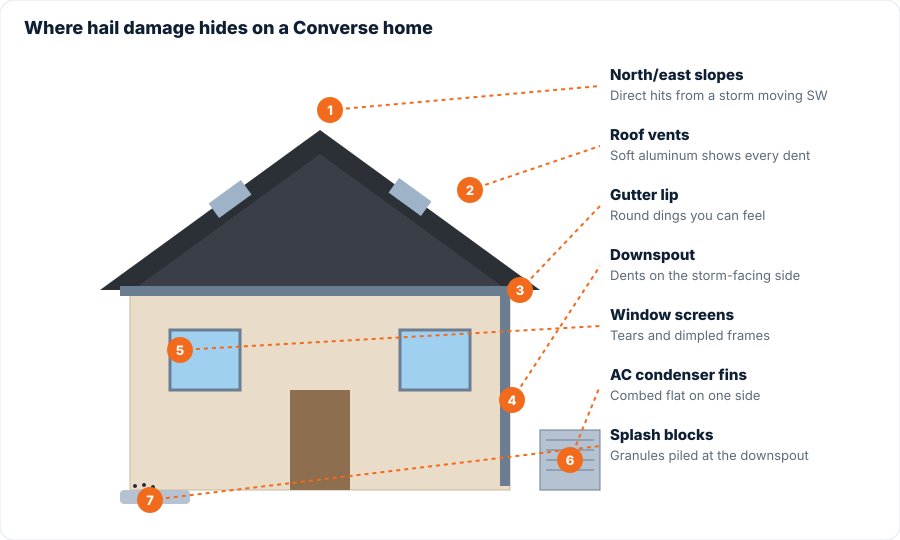

You can't safely inspect shingles from the ground, but you can absolutely tell whether it's worth having someone come out. Walk around your house with your phone and check these nine things. Photograph anything you find; the timestamp is useful later.

- Granules in the downspout splash blocks. Black or colored sand piled where the downspouts drain. Fresh granule loss is the first sign of hail impact.
- Dented gutters. Run your hand along the top lip of the gutter. Round dents you can feel mean stones big enough to bruise shingles.
- Dinged downspouts and gutter end caps. Especially on the north and east sides, where the September 11 storm was coming from.
- Torn or dimpled window screens. Look for small tears and dents in the aluminum frame.
- Chipped paint on fascia, deck rails and the mailbox. Hail knocks small round chips out of painted surfaces.
- Flattened fins on the AC condenser. The side facing the storm will look combed flat. This is also worth mentioning to your insurer.
- Dents in soft-metal roof vents that you can see from the yard with a zoom lens or binoculars. Aluminum turtle vents show every hit.
- Shingle pieces or tabs in the yard. With 60 mph gusts, some roofs lost tabs outright.
- Your car. If your vehicle was outside and has dents, your roof took the same hail.

Found two or more? Get it inspected.
Two or more of these signs almost always means shingle damage on the roof itself. That doesn't automatically mean you need a new roof, but it means the roof needs eyes on it, and the sooner the better while the damage is clearly fresh.
Our inspection is free and comes with a photo report you keep regardless. Request one here or call 832-503-5866.
Free hail inspection in Converse, Kirby, Windcrest & NE San AntonioCall or text 832-503-5866 or request online. Same-day photo report, no obligation.